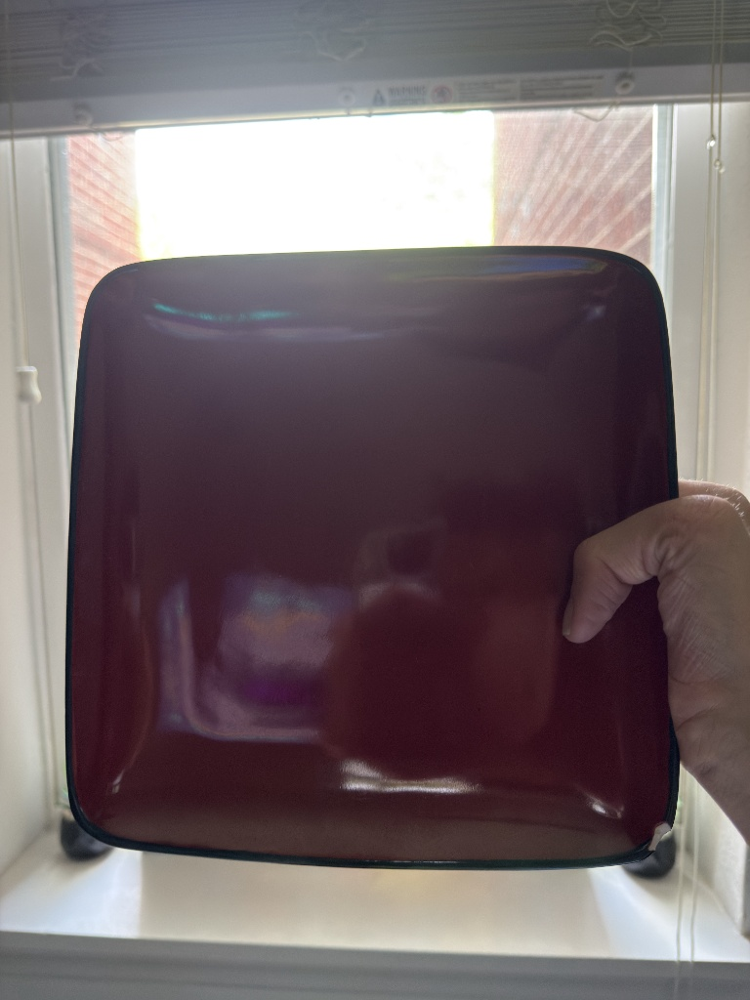

Original Image
Click any link below to open the image variant in a new tab.
This page explores digital image formats, file sizes, resolutions, and proportionality in the context of front-end web development. By working with a high-resolution Pexels photograph and a personal phone photo, the goal is to understand how image size (in pixels and megabytes) affects load time and visual quality, how different file formats (JPG, GIF, greyscale, B&W) compare, and why maintaining correct proportions matters so much when displaying images on the web.
This image was selected from Pexels.com and was photographed by Leroy Skalstad, a landscape and street photographer whose portfolio features detailed architectural and nature scenes. The original file is a JPG measuring 7500 × 5000 pixels (3:2 aspect ratio). JPG is a lossy compressed format well-suited for photographs with rich colour gradients; it achieves smaller file sizes by discarding imperceptible colour detail on each save.
Click any link below to open the image variant in a new tab.
The original high-resolution file is displayed below using CSS to shrink it to 20% of its natural width. The file itself is unchanged — only its rendered size is reduced by the browser. Notice that the image still looks sharp because we are scaling a large source down, not up.
The image was opened in an image editor and permanently resized to 600 × 400 px, producing a much smaller file (about 80 KB). This is the correct approach for web use: serve an appropriately sized file rather than forcing the browser to download a massive original.
The editor-resized 600 × 400 image is shown four times below, each with one dimension deliberately mis-matched using CSS. Two are squished vertically (height reduced 33%, then another 33%); two are squished horizontally (width reduced 33%, then another 33%). In every case one dimension still matches the 600 × 400 original.
The editor-resized image (600 × 400 px) was further reduced in an editor to 25% of its size (150 × 100 px) and saved as a separate file. Both are displayed below at the same CSS width of 500 px. The properly-sized image remains crisp; the 150 × 100 version looks visibly pixelated because the browser must stretch it far beyond its native resolution.
This photo was taken personally and features a perfectly square red plate held in hand, pairing a geometrically precise object (the square plate) with the organic proportions of a human hand to make the contrast in "perfectness" visible. The original was captured on a smartphone in portrait orientation. The file is a JPG measuring approximately 3024 × 4032 px (about 4 MB). Smartphone cameras save in JPG by default to keep file sizes manageable while retaining enough colour depth for everyday photography.
Click any link below to open the image variant in a new tab.
The original portrait phone photo is displayed below at 20% of its natural width using inline CSS only. The browser downloads the full about 4 MB file but renders it small — this illustrates why you should not rely on CSS alone to serve large images: users still pay the download cost.

The image was permanently resized in an editor to 600 × 800 px, maintaining the original 3:4 portrait aspect ratio and reducing the file to roughly about 120 KB. The image looks clean at this size — the correct way to serve a phone photo on a web page.
The editor-resized 600 × 800 portrait image is shown four times below with one dimension deliberately mis-set via CSS. Two are squished vertically; two are squished horizontally. Notice how the hand and plate look unnaturally stretched or compressed in each case.
The editor-resized portrait (600 × 800 px) was further reduced in an editor to 25% (150 × 200 px) and saved separately. Both are displayed at the same CSS width of 400 px. The pixelation of the tiny source is immediately obvious next to the properly-prepared image.
AI Use Statement: AI was used to help scaffold and refine the Pictures page structure, generate and adjust the repeated article/figure layout, verify naming consistency for required image variants, and troubleshoot HTML/CSS validation issues. AI assistance was also used to automate image conversions and size variants (GIF, greyscale, black and white, 600x400/600x800, and 150x100/150x200) so links and demonstrations match the assignment workflow.
Frustrations, Challenges, and Learning: The most challenging parts were keeping filename sequences consistent, avoiding broken links while building many image versions, and preserving proportions during distortion examples. This assignment made the differences between CSS-only resizing and true editor resizing much clearer, and reinforced how image dimensions and compression choices directly affect quality, load performance, and accessibility in web pages.